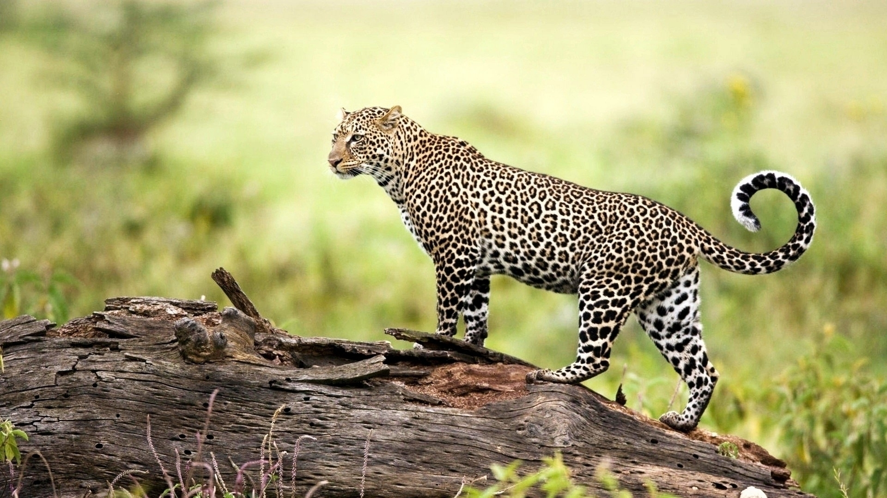

Amur Leopard
Folk vanligvis tenker på at leoparder befinner seg i savannene i Afrika, men i øst Russland, har en sjelden underart tilpasset livet i de tempererte skoger som utgjør den nordligste delen av artens rekkevidde. I likhet med andre leoparder, kan Amur leopard løpe opp til 60 km per time. Dette utrolige dyret kan hoppe mer enn 5,7 meter horisontalt og opp til 3 meter vertikalt. Men desverre fins det bare 40 av dem.
Amur leopard er ensom. Den er lett på potene og sterk, bærer og skjuler uferdige bytter, slik at det ikke blir tatt av andre rovdyr. Det har blitt rapportert at noen hanner bor hos hunner etter parring, og kan også hjelpe til med å oppdra de unge. Flere hanner slåss om en hun. De lever i 10-15 år, og i fangenskap opp til 20 år. Amur leopard er også kjent som den fjerne øst leopard, Manchurian leopard eller koreansk leopard.
Amur leopard er jaktet på hovedsakelig for sin vakre, flekkete pels. I 1999, ble det funnet en kvinnelig og en mannlig Amur leopard hud, som ble solgt for $ 500 og $ 1000 henholdsvis i landsbyen Barabash, ikke langt fra Kedrovaya Pad reservat i Russland. Landbruk og landsbyer omringer skogene der leopardene bor. Et resultat av at skogene er relativt tilgjengelig, gjør krypskyting et problem, ikke bare for leoparder selv, men også for viktige byttedyr som rådyr, Sika hjort og hare, som er jaktet av landsbyboerne både for mat og penger.
WWF implementerer programmer for å stanse den ulovlige handelen med deler av amurleopard. Sammen med TRAFFIC, verdens største overvåknings nettverk, hjelper WWF myndigheter å håndheve nasjonale og internasjonale handelsrestriksjoner på produkter av Amurleopard. Amurleopard er oppført på CITES Appendix I, som forbyr all kommersiell handel av arten.
